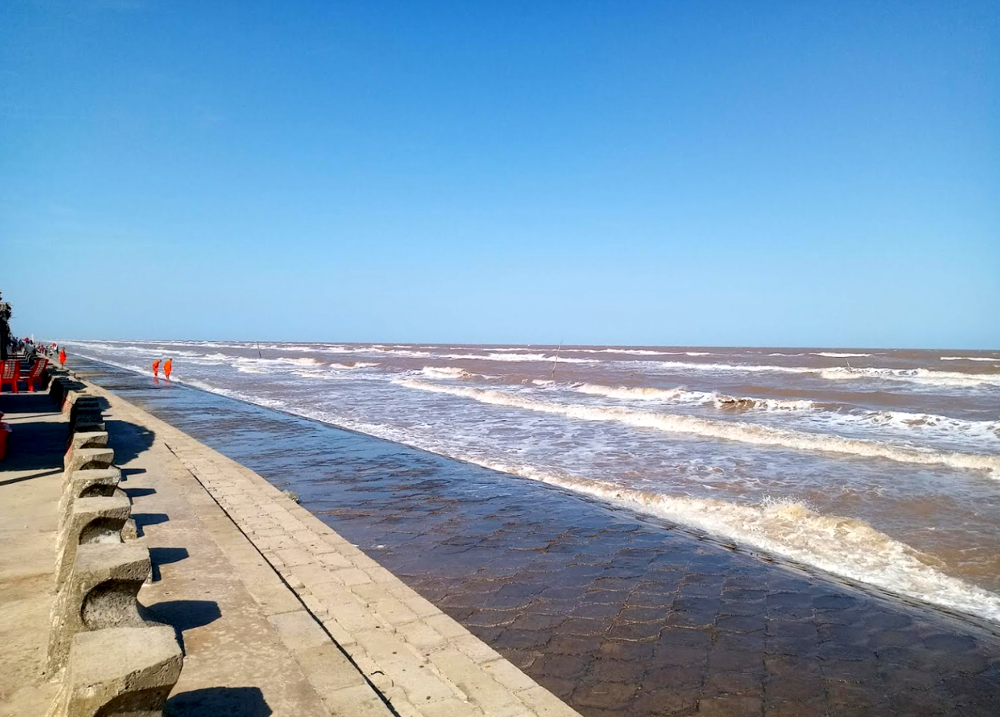
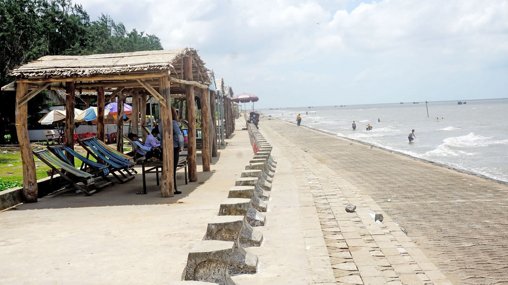
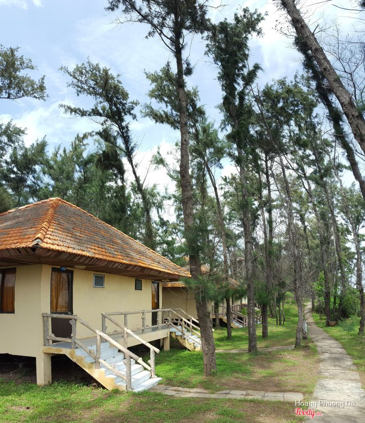
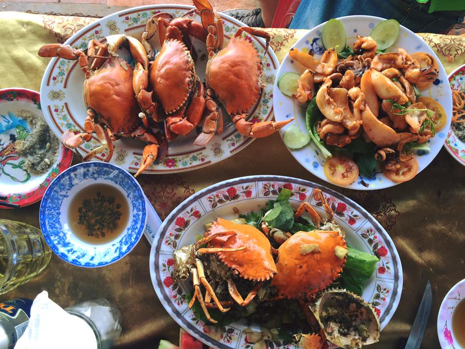
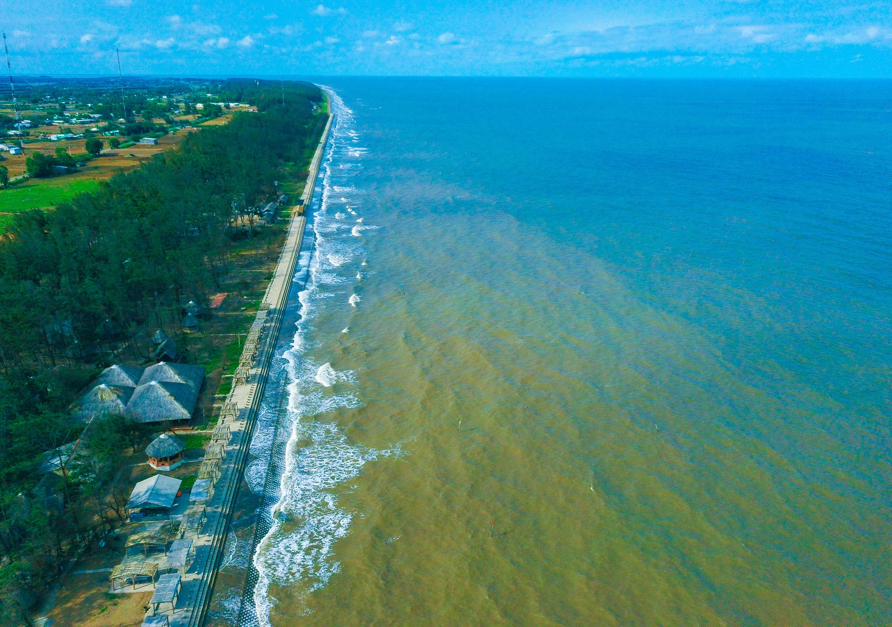

| Homepage | News | Form | About Me |
The beach at Ba Dong has long been regarded as one of Tra Vinh's most popular tourist spots. Immersed in the blue water's area and inhaling the distinct sea breeze. Visitors will see why Ba Dong Beach is so popular. Ba Dong beach gets its name from the sea's regular activity. Three magnificent and distinctive sand caves appear on the beach at low tide (including two small caves and one large cave). So, even if you can't it it to Ba Dong for the race, you may still have a good time in these fantastic dunes. You can sample the famed specialties of the western river region while visiting Ba Dong beach.

Ba Dong Beach, which runs approximately 50 kilometers across three communes in southern Tra Vinh Province in Vietnam's Mekong Delta, is a magnificent long beach ideal for bathing and holidays... Ba Dong Beach from Above Ba Dong Beach is located in the Truong Long Hoa Commune of the Duyen Hai District, about 55 kilometers from Tra Vinh City. For 10 kilometers, the Ba Dong beachfront is flanked with pure white sand and clean, fresh air.

The French created a resort during colonialism and utilized it to relax and swim. Vietnamese holidaymakers visit this resort on weekends and vacations. Regrettably, wars have devastated the entire road infrastructure that leads to Ba Dong Beach. The province of Tra Vinh is now assessing the potential of rebuilding the road infrastructure. The tourism bureau in Tra Vinh also intends to rehabilitate and exploit Ba Dong seaside resort, transforming it into a popular tourist destination in the Cuu Long River Delta.

The Natural Beauty of Ba Dong Beach When you arrive at the oceanic site, you will be taken aback by the salty sea air, which is so different from the lovely scents of fruits that dominate the delta's surroundings. The beach's tourism potential was first realized in the early twentieth century when French colonialists constructed a hotel for local officials to spend their weekends. From the hotels and restaurants hidden among the whispering poplars in the sea breeze, you may gaze out to sea, where fleets of fishing boats toil away to bring back infinite riches to enrich the country. This resort offers a wide variety of fresh fish at unexpectedly low pricing. Numerous seafood restaurants along Ba Dong Beach, specializing in traditional southwestern Vietnamese cuisine caught straight from the sea. Crab sauce with bananas, carambola, girdle cakes or rice rolls, and boiling pork are all specialties. The beach is lined with bungalows and cots of various costs that allow visitors to relax and rest while listening to the rhythmic sound of undulating waves. On the beach, there are several sand dunes where you can play. A lighthouse, shrimp lakes, and small islets are among the other attractions here. You can fly kites, play sports, stroll amid various sand dunes, or ride motorbikes fast enough to enjoy thrills that are otherwise difficult to come by elsewhere on the beach that runs as far as the eye can see. You can sleep in "underground dwellings" erected during the war to dodge mortars and bullets when night falls. From above, they are shielded by lush foliage. An imposing mangrove forest may be found approximately 7 kilometers from the beach. The fresh and pure winds of a mild wind energize beachgoers. If the physical activities have left you hungry, there are a variety of culinary delights available directly on the beach.

Numerous average-income tourists from Tra Vinh and adjacent provinces are flocking to Ba Dong for brief vacations. With tens of thousands of tourists from all over the world flocking to Ba Dong Beach for sightseeing and relaxation, the entire beach is attractive, colorful, fascinating, and bustling.
